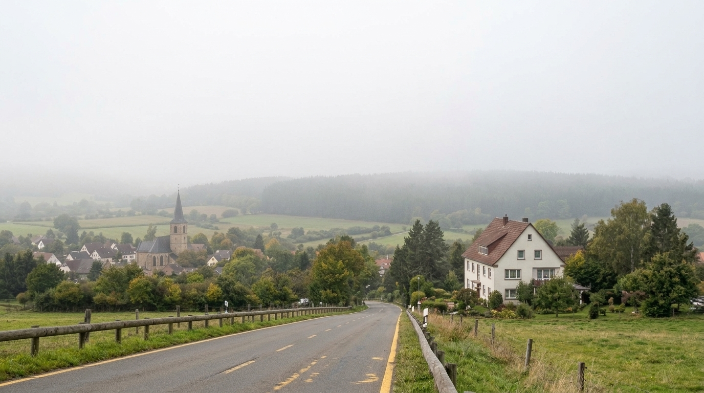

STATION: ARD-NODE-409
/
LOC: 47.3769° N, 8.5417° E
/
ALT: 408m MSL
SENSOR BUS: MODULINO_HTS221_0x5F OK
sensors ADC VREF: 3.298V
Ambient Temperature
Modulino Thermo (HTS221)
21.4
°C
trending_up +0.3°C/h
Min: 18.1° | Max: 22.8°
Relative Humidity
NOMINAL
58.2
%RH
trending_flat Steady (±0.4%)
Dew Pt: 12.8°C
Optical Visibility
OV2640-AI
14.8
km
Clear Horizon Vista
Contrast 91%
External Model Forecast
ECMWF MODEL
SYNC
Open-Meteo ECMWF (Synced 4m ago)
cloud_sync Next run: 11m
1014.2 hPa
videocam
Window Optical Camera Feed
Contrast-decay extinction estimation from fixed window station
LIVE FRAME
OV2640 / 1600x1200

Captured: 14:32:05 UTC|Exp: 1/450s|Gain: +2dB
FOV: 68° Horizontal
VILLAGE CHURCH SPIRE (1.4 km)
Contrast: 88.4% [DET]
VALLEY RIDGE FOREST (4.2 km)
Contrast: 62.1% [DET]
DISTANT HILL CREST (8.5 km)
Contrast: 29.5% [CUTOFF]
ROADSIDE FARMHOUSE (0.3 km)
Contrast: 96.2% [DET]
wb_sunnyKoschmieder Extinction Coeff (σ): 0.264 km⁻¹Sensor RAW: 2.1 MB / JPEG Quality 92
Auto-snapshot every 60s • DMA Buffer allocated
show_chart
60-Minute Combined Micro-Trend
Dual-axis telemetry: Ambient Temp (°C) & RH (%) historical stream
Temp (°C)
RH (%)
24°
22°
20°
70%
60%
Modulino Thermo (HTS221) offset updated: T_offset=+0.1°C, Dew point recalculated 12.8°C
-60 min (13:32)
-45 min
-30 min
-15 min
Now (14:32)
TEMP Δ1h
+1.2°C
RH Δ1h
-4.1%
I2C Packets
3,600 / 0 err
Ring Buffer
60 / 60 slot
calculate
Psychrometric
Atmospheric Calculations
DEW POINT
water_drop
12.8°C
Magnus-Tetens Model
HEAT INDEX
thermostat
21.2°C
Perceived Comfort
AIR DENSITY (ρ)
air
1.198kg/m³
P: 1014.2 hPa @ 408m
VAPOR PRESSURE
compress
14.82hPa
Sat Deficit: 10.6 hPa
visibility
Good Range
Visibility Classification
14.8
KILOMETERS
Dense Fog
< 1.0 km
Mist / Haze
1.0 - 5.0 km
Moderate / Good
10.0 - 20.0 km
Exceptional
> 20.0 km
routine
12-Hour Forecast Preview
1014.2 hPa ↑ (Baro Steady)
17:00
partly_cloudy_day
22°
10% Rain
20:00
cloud
19°
15% Rain
23:00
nights_stay
17°
5% Rain
02:00
foggy
15°
Haze 4km
Forecast Delta: Model predicts -0.2°C variance vs sensor
Calibrated
tune
HOST IO
Quick Actions & Controls
sd_card
MicroSD Storage (SPI)
14.2 GB / 32 GB Used (44%)
CSV Logs: 24,102 records
Images: 1,420 JPEGs
Host Core Terminal Payload • FreeRTOS Task Scheduler
Core 0: 240MHz | Core 1: 240MHz
[14:32:05.102]
[CAM_DMA]
Snapshot acquired: 1600x1200 JPEG, 142ms transfer, Optical extinction calculated: sigma=0.264 km^-1
[14:31:00.040]
[Modulino]
Modulino Thermo (HTS221) offset updated: T_offset=+0.1°C, Dew point recalculated 12.8°C
[14:28:12.890]
[NET_HTTP]
Forecast sync completed in 312ms. Synced 48 forecast points to LittleFS partition.